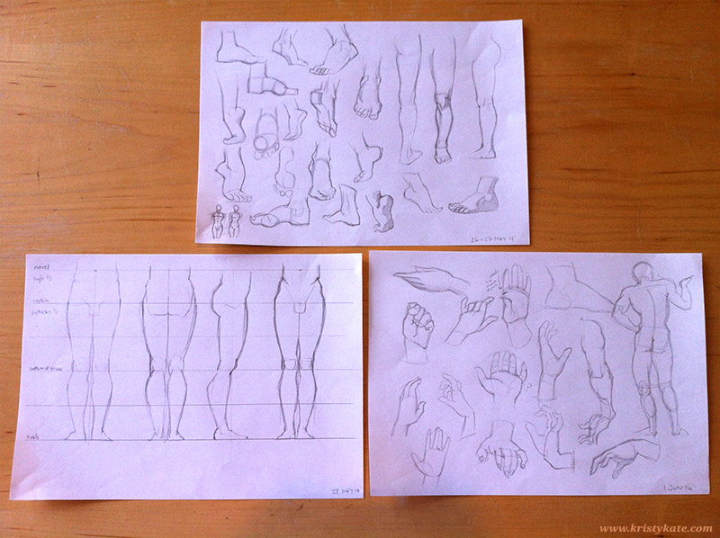
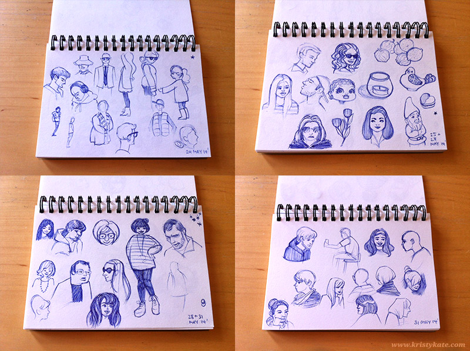

Week 10 Studies
May 26th - June 1st
Not too much to say on Week 10 - completed a few anatomy studies on the legs, feet and hands, and sketched people out in the wild.


Thinking I'll focus on drawing hands for Week 11. I still find them really tricky!
All the best,
x Kristy Kate
+ + +
Have any thoughts on my studies? Join me on my creative journey by leaving a comment (constructive criticism welcome) or connecting via Twitter or Facebook.